SỔ TAY HƯỚNG DẪN SỬ DỤNG HỆ THỐNG QUẢN LÝ THIẾT BỊ & TÀI SẢN CNTT
Tài liệu hướng dẫn trực quan "Cầm tay chỉ việc", minh họa thực tế từng thao tác, được biên soạn đặc biệt dành cho Cán bộ Quản lý Tài sản, Thủ kho, Kế toán và Nhân sự không chuyên sâu về công nghệ thông tin.
📖 BẢNG GIẢI THÍCH THUẬT NGỮ "BÌNH DÂN" DỄ HIỂU
Để tránh bỡ ngỡ với các từ ngữ chuyên môn, hãy tham khảo bảng so sánh thực tế dưới đây:
| Thuật ngữ hệ thống | Tên gọi tiếng Việt | Ví dụ thực tế dễ hiểu | Quy tắc bắt buộc |
|---|---|---|---|
| Hardware / Asset | Tài sản / Thiết bị | Laptop, Máy tính để bàn PC, Màn hình, Máy in, Máy chiếu... | Có mã tem và số sê-ri riêng. Phải theo dõi ai đang giữ. |
| Checkout | Cấp phát / Bàn giao | Giao laptop cho nhân viên mới nhận việc, giao máy in cho phòng Kế toán. | Ghi nhận đích danh người nhận chịu trách nhiệm bảo quản. |
| Checkin | Thu hồi / Trả về kho | Nhân viên nghỉ việc trả lại máy, thu hồi máy cũ về kho cất. | Máy quay trở lại kho để sẵn sàng cấp cho người tiếp theo. |
| Licenses | Bản quyền / Giấy phép | Key bản quyền Windows 11, Microsoft Office 365, Photoshop... | Quản lý theo số suất (Seats) được phép kích hoạt. |
| Accessories | Phụ kiện | Chuột máy tính, bàn phím rời, sạc laptop, tai nghe... | Phát cho nhân viên, có thể thu hồi lại được. |
| Consumables | Vật tư tiêu hao | Hộp mực máy in, giấy in A4, đầu bấm mạng RJ45, pin tiểu... | Phát ra là dùng hết, không thu hồi lại về kho. |
| Components | Linh kiện nâng cấp | Thanh RAM, ổ cứng SSD, card màn hình VGA... | Lắp bên trong một máy tính cụ thể. |
| Predefined Kits | Gói thiết bị mẫu | Gói nhân viên mới: 1 Laptop + 1 Chuột + 1 Office 365. | Cấp phát 1 chạm cả combo thay vì tìm từng món riêng lẻ. |
PHẦN 1: ĐĂNG NHẬP & TỔNG QUAN HỆ THỐNG
Bước 1.1 Đăng nhập vào hệ thống
- Mở trình duyệt web (Google Chrome, Microsoft Edge hoặc Cốc Cốc).
- Truy cập địa chỉ website phần mềm do quản trị viên IT cung cấp (Ví dụ:
http://127.0.0.1:8000/login). - Nhập Tên người dùng (Username) hoặc địa chỉ Email vào ô đầu tiên.
- Nhập Mật khẩu (Password) vào ô thứ hai.
- Tích chọn vào ô "Ghi nhớ đăng nhập" để không phải gõ lại mật khẩu vào lần sau.
- Bấm nút xanh dương Đăng nhập.
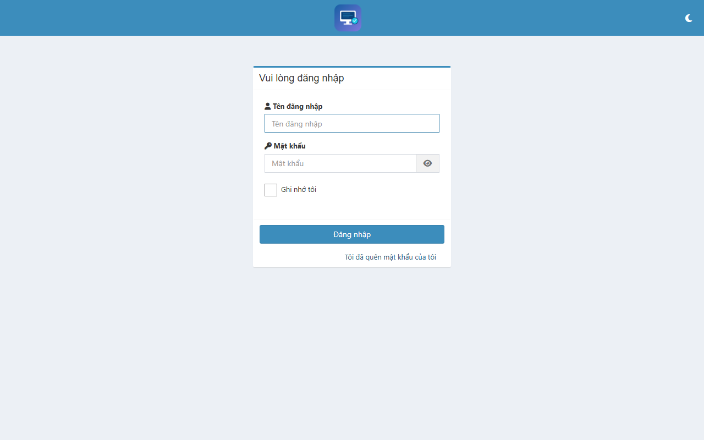
Bước 1.2 Làm quen Bảng điều khiển (Dashboard)
Trên màn hình Bảng điều khiển, bạn sẽ thấy ngay 4 khối số liệu nổi bật:
- Khối Xanh dương (Tổng tài sản): Toàn bộ số lượng máy móc thiết bị hiện có của doanh nghiệp.
- Khối Xanh lá (Đã cấp phát): Thiết bị đang được nhân viên hoặc phòng ban sử dụng thực tế hàng ngày.
- Khối Vàng cam (Sẵn sàng cấp phát): Thiết bị hoạt động tốt đang nằm trong kho, có thể bàn giao ngay cho nhân sự mới.
- Khối Đỏ (Cần sửa chữa / Chờ xử lý): Thiết bị đang bị hư hỏng, đang đi bảo hành hoặc đang cài đặt kỹ thuật.

Bước 1.3 Thanh tìm kiếm nhanh & Menu điều hướng bên trái
- Menu bên trái (Sidebar): Phân chia danh mục rành mạch: Tài sản, Giấy phép, Phụ kiện, Vật tư tiêu hao, Linh kiện, Gói thiết bị mẫu, Người dùng, Cài đặt.
- Ô tìm kiếm nhanh (Góc trên cùng): Gõ mã tài sản (Ví dụ
TS-CNTT-001), số sê-ri hoặc tên nhân viên rồi bấmEnterđể mở ngay hồ sơ máy. - Nút Tạo mới nhanh (+ Tạo mới): Nằm ở thanh tiêu đề, giúp bạn tạo ngay một tài sản, người dùng hay bản quyền mới mà không cần chuyển trang.
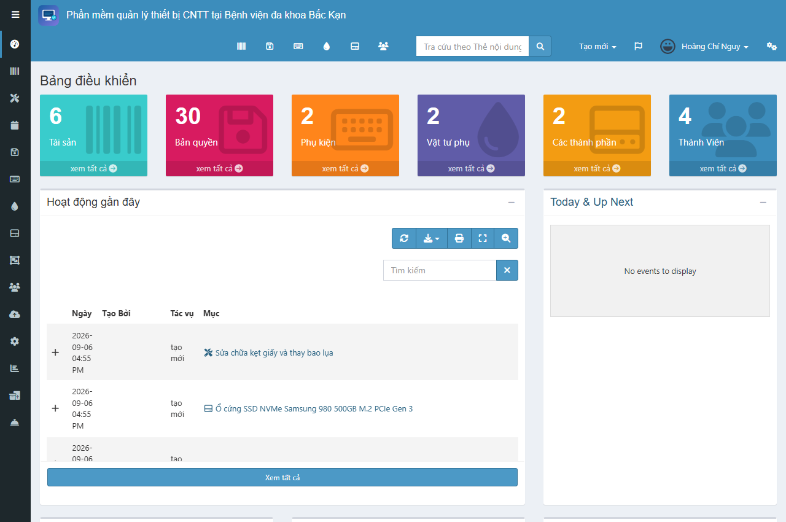
PHẦN 2: QUẢN LÝ THIẾT BỊ & TÀI SẢN (HARDWARE / ASSETS)
Bước 2.1 Xem và tìm kiếm danh sách tài sản
- Tại menu bên trái, nhấp chuột vào mục Tài sản -> chọn Xem tất cả.
- Tại bảng dữ liệu:
- Cột Tên tài sản & Mã tài sản: Tên máy và mã quản lý nội bộ.
- Cột Mẫu mã (Model): Dòng máy (Dell Latitude, MacBook, OptiPlex...).
- Cột Trạng thái: Màu xanh lá là máy tốt cất kho; Màu xanh dương là đã bàn giao cho nhân viên.
- Cột Được thanh toán tới: Tên nhân viên đang chịu trách nhiệm giữ máy.
- Bạn có thể dùng ô Tìm kiếm ở góc trên bên phải bảng để lọc nhanh theo tên hoặc số sê-ri.
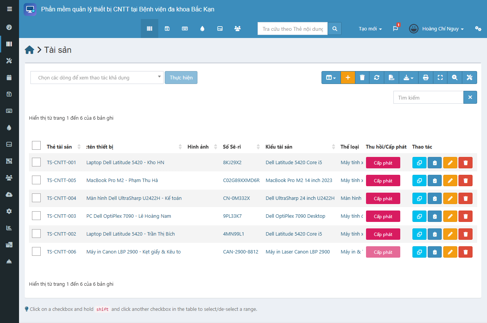
Bước 2.2 Thêm mới một thiết bị khi vừa mua về
- Bấm nút xanh lá Tạo mới tại góc phải trên cùng trang Tài sản.
- Điền các trường thông tin:
- Thẻ tài sản (Asset Tag): Mã tem dán (Ví dụ:
TS-CNTT-007). Có thể để trống để hệ thống tự sinh số. - Tên tài sản: Tên dễ nhớ (Ví dụ: Laptop Dell Latitude 5420 - Máy mới kho HN).
- Mẫu mã (Model) *: Bấm chọn dòng máy trong danh mục.
- Trạng thái *: Chọn "Sẵn sàng cấp phát" (nếu máy tốt cất kho).
- Số sê-ri (Serial Number): Dãy số sê-ri của nhà sản xuất in dưới đáy máy.
- Ngày mua & Giá mua: Nhập ngày mua và đơn giá để hệ thống tính khấu hao tự động.
- Thẻ tài sản (Asset Tag): Mã tem dán (Ví dụ:
- Cuộn xuống dưới và bấm nút Lưu lại.
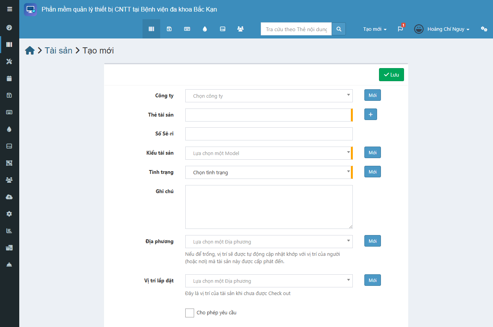
Bước 2.3 Cấp phát thiết bị (Bàn giao cho nhân viên)
- Tìm thiết bị đang ở trạng thái "Sẵn sàng cấp phát" trong danh sách tài sản.
- Nhấp vào biểu tượng nút Cấp phát (Check-out) ở cột Thao tác bên phải máy đó.
- Tại form Cấp phát:
- Cấp phát tới: Chọn Người dùng (hoặc có thể chọn cấp cho Phòng ban/Vị trí).
- Người dùng: Nhấp vào ô và gõ tên nhân viên nhận máy (Ví dụ: Trần Thị Bích).
- Ngày cấp phát: Mặc định là ngày hôm nay.
- Ghi chú: Điền tình trạng bàn giao (Ví dụ: Máy mới 100%, đủ sạc và túi xách).
- Bấm nút xanh dương Cấp phát. Máy sẽ ngay lập tức được ghi vào hồ sơ của nhân viên đó.
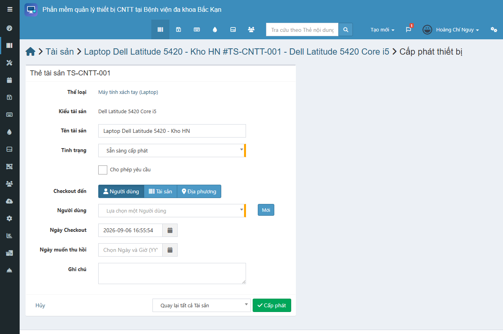
Bước 2.4 Thu hồi thiết bị về kho (Check-in)
- Tìm máy cần thu hồi trong danh sách, nhấp nút màu vàng Thu hồi (Check-in).
- Tại form Thu hồi:
- Trạng thái sau khi thu hồi: Chọn Sẵn sàng cấp phát (nếu máy tốt), hoặc Đang sửa chữa (nếu máy bị vỡ hỏng), hoặc Đang chờ cài đặt (nếu cần IT cài lại Win xóa dữ liệu cũ).
- Vị trí kho lưu: Chọn kho cất giữ (Ví dụ: Kho Thiết bị & Vật tư CNTT).
- Ghi chú thu hồi: Ghi rõ tình trạng nhận lại (Ví dụ: Đã nhận đủ máy và sạc, máy hoạt động bình thường).
- Nhấn nút Thu hồi để hoàn thành.
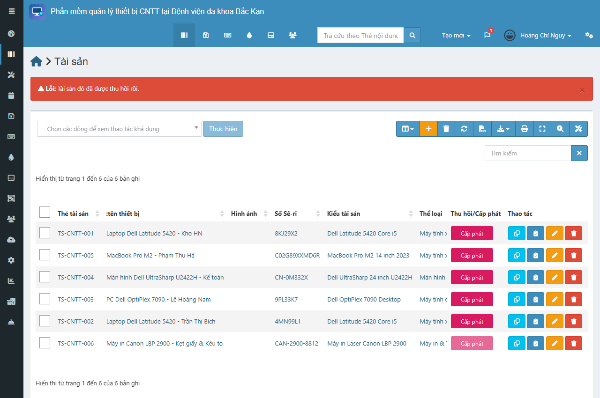
Bước 2.5 Xem lý lịch & Lịch sử sử dụng của thiết bị
- Nhấp chuột trực tiếp vào Tên tài sản trong bảng danh sách.
- Trang hồ sơ mở ra với các thẻ thông tin chi tiết:
- Thông tin cơ bản: Cấu hình, giá mua, ngày mua, hạn bảo hành.
- Tab Lịch sử (History): Ghi rõ từng mốc thời gian: Ngày nào bàn giao cho ai, ngày nào nhận lại máy.
- Tab Linh kiện & Phụ kiện: Danh sách RAM, ổ cứng SSD hay chuột đang đi kèm máy này.
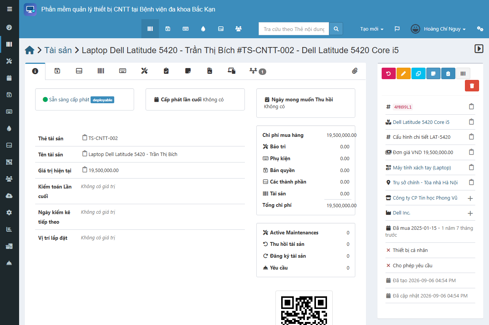
Bước 2.6 In nhãn dán mã vạch / QR Code lên thân máy
- Tại trang chi tiết tài sản, nhấp vào nút In nhãn (Print Label) trên thanh công cụ.
- Giao diện tem nhãn hiển thị trực quan gồm: Tên thiết bị, Mã tài sản, Số sê-ri và Mã QR Code chuẩn 2D.
- Bấm tổ hợp phím
Ctrl + Ptrên bàn phím để in ra máy in tem dán decal và dán lên thân máy.
PHẦN 3: QUẢN LÝ BẢN QUYỀN PHẦN MỀM (LICENSES)
Bước 3.1 Xem danh mục bản quyền phần mềm
- Nhấp vào mục Giấy phép (Licenses) trên menu bên trái.
- Cột Tổng số (Seats): Tổng số người/máy được phép cài đặt hợp pháp.
- Cột Khả dụng (Available): Số suất còn trống sẵn sàng cấp phát.
- Cột Ngày hết hạn: Theo dõi thời điểm gói bản quyền hết hạn để kịp thời làm đề xuất gia hạn.
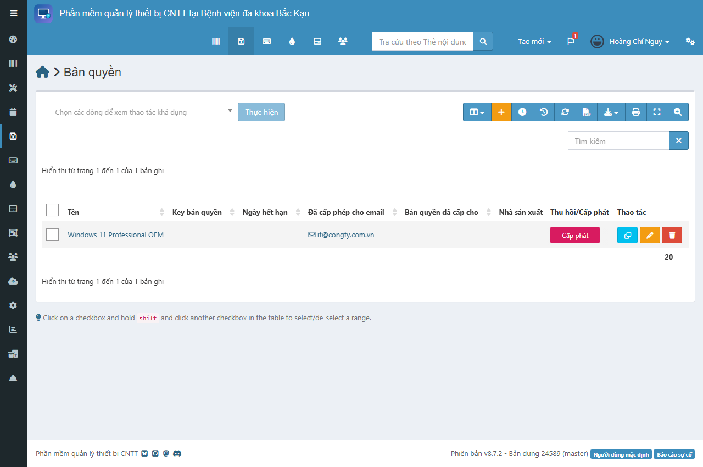
Bước 3.2 Khai báo gói bản quyền phần mềm mới
- Bấm nút Tạo mới trong trang Giấy phép.
- Nhập thông tin:
- Tên phần mềm: Ví dụ Microsoft 365 Business Standard.
- Loại danh mục: Chọn Phần mềm Văn phòng.
- Số lượng giấy phép (Seats): Nhập tổng số suất được kích hoạt (Ví dụ:
10). - Mã sản phẩm (Product Key): Dãy key kích hoạt bản quyền.
- Email cấp phép: Email tài khoản quản trị gói bản quyền của công ty.
- Bấm nút Lưu lại.
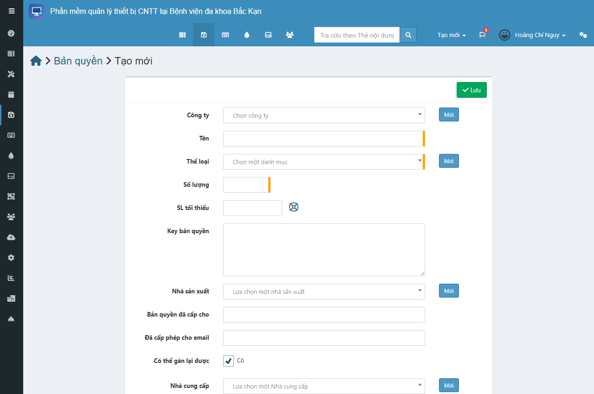
Bước 3.3 Cấp phát bản quyền cho nhân viên
- Bấm vào tên gói bản quyền (Ví dụ: Microsoft 365 Business Standard).
- Danh sách từng suất sử dụng (Seat 1, Seat 2...) sẽ hiển thị rõ ràng.
- Chọn một suất đang có trạng thái "Sẵn sàng", bấm nút Cấp phát (Check-out).
- Gõ chọn tên nhân viên nhận bản quyền (Ví dụ: Trần Thị Bích) rồi bấm Lưu.
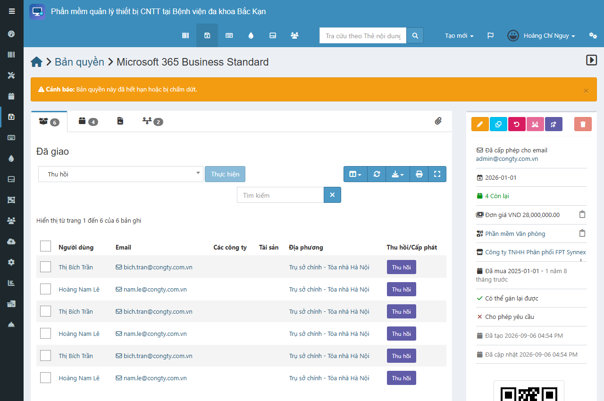
PHẦN 4: QUẢN LÝ PHỤ KIỆN (ACCESSORIES)
Bước 4.1 Xem danh mục phụ kiện và tồn kho
- Nhấp vào mục Phụ kiện trên menu bên trái.
- Kiểm tra cột Số lượng tổng và cột Khả dụng để biết số lượng còn lại có thể phát.
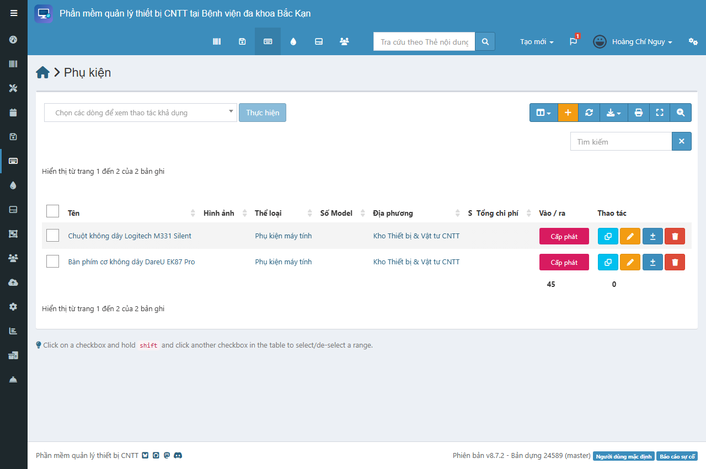
Bước 4.2 Thêm mới phụ kiện vào kho
- Bấm nút Tạo mới trong trang Phụ kiện.
- Nhập: Tên phụ kiện (Ví dụ: Chuột không dây Logitech M331), Số lượng nhập (Ví dụ:
30) và Số lượng tối thiểu cảnh báo (Ví dụ:5). - Nhấn nút Lưu lại.
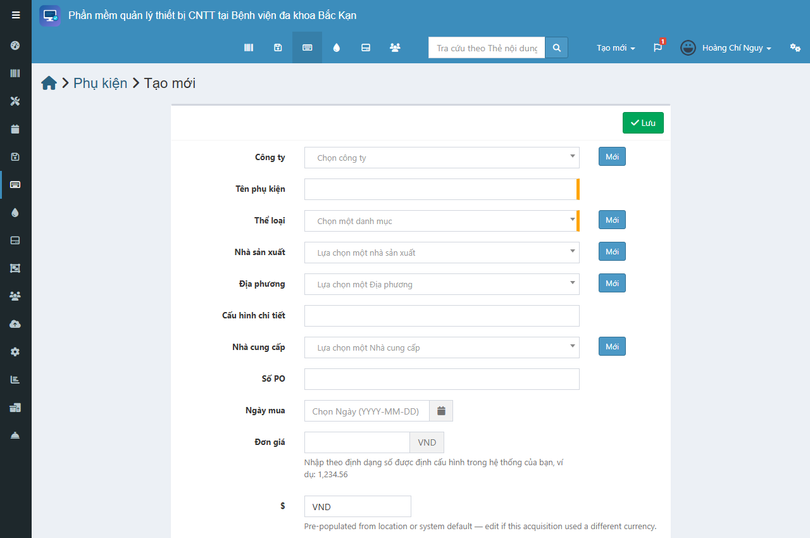
Bước 4.3 Cấp phát phụ kiện cho nhân viên
- Bấm nút Cấp phát (Check-out) cạnh phụ kiện cần giao.
- Gõ chọn tên nhân viên nhận phụ kiện (Ví dụ: Lê Hoàng Nam) rồi bấm Cấp phát.
- Tồn kho tự động trừ đi 1 cái. Khi nhân viên nghỉ việc, có thể bấm nút Thu hồi để lấy lại phụ kiện về kho cất.
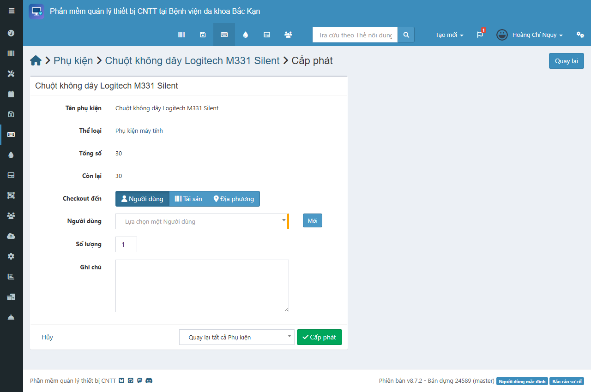
PHẦN 5: QUẢN LÝ VẬT TƯ TIÊU HAO (CONSUMABLES)
Bước 5.1 Theo dõi tồn kho vật tư tiêu hao
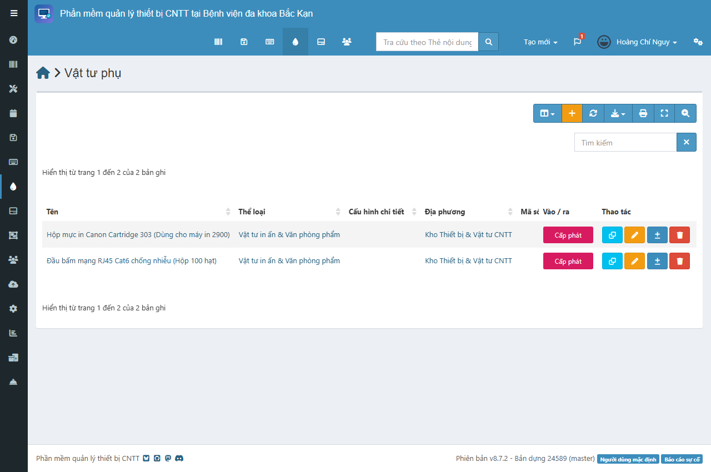
Bước 5.2 Khai báo nhập thêm vật tư tiêu hao
- Bấm nút Tạo mới trong trang Vật tư tiêu hao.
- Nhập: Tên vật tư (Ví dụ: Hộp mực in Canon Cartridge 303), Số lượng nhập (Ví dụ:
12 hộp) và Mức tối thiểu (Ví dụ:3 hộp). - Bấm Lưu lại.
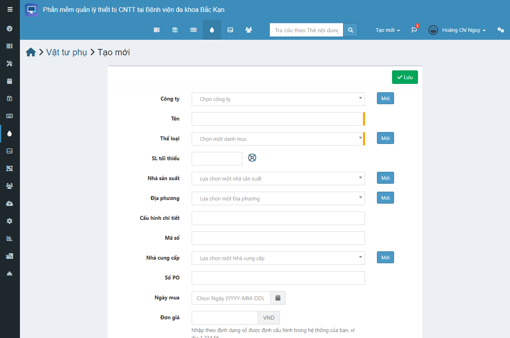
Bước 5.3 Xuất kho vật tư cho nhân viên / phòng ban
- Bấm nút Cấp phát / Xuất kho (Check-out) ở dòng vật tư cần xuất.
- Chọn người nhận hoặc phòng ban nhận (Ví dụ xuất 1 hộp mực cho Phòng Tài chính - Kế toán).
- Nhấn Lưu. Kho sẽ trừ thẳng số lượng và lưu vết vào sổ nhật ký xuất kho.
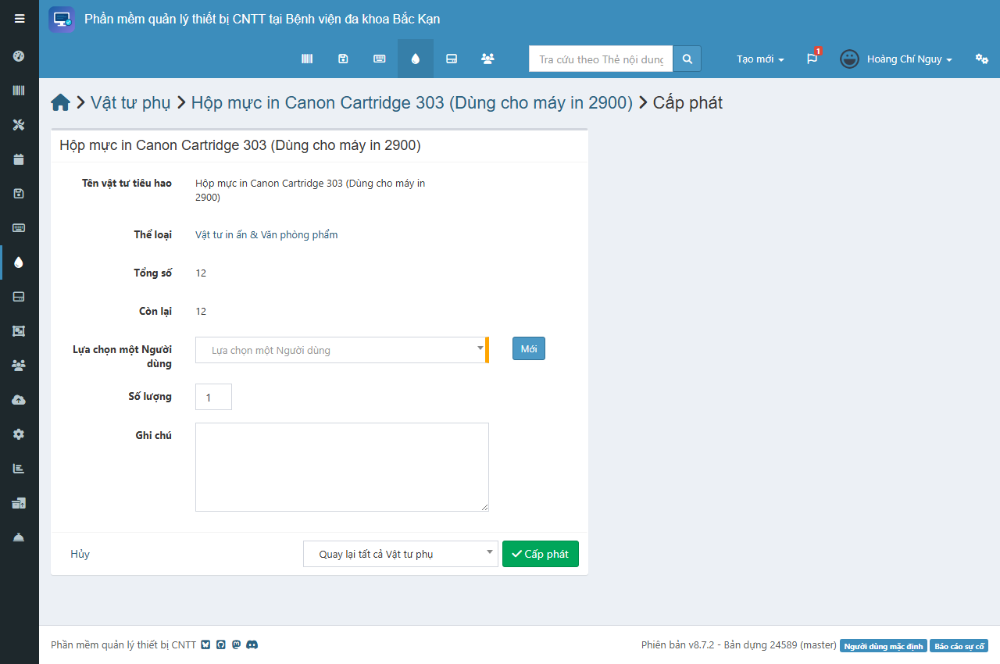
PHẦN 6: QUẢN LÝ LINH KIỆN NÂNG CẤP (COMPONENTS)
Bước 6.1 Xem danh sách linh kiện trong kho
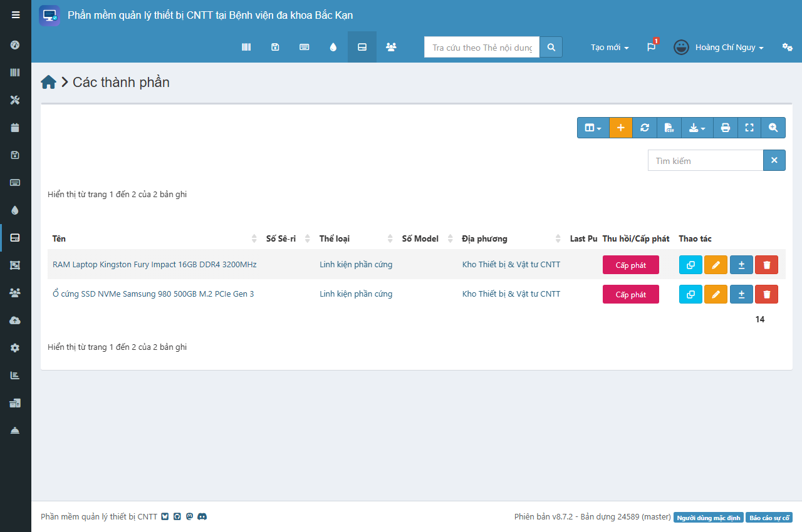
Bước 6.2 Khai báo linh kiện mới nhập kho
- Bấm nút Tạo mới trong trang Linh kiện.
- Nhập: Tên linh kiện (Ví dụ: RAM Laptop Kingston Fury 16GB DDR4) và Số lượng (Ví dụ:
8 thanh). - Bấm Lưu lại.
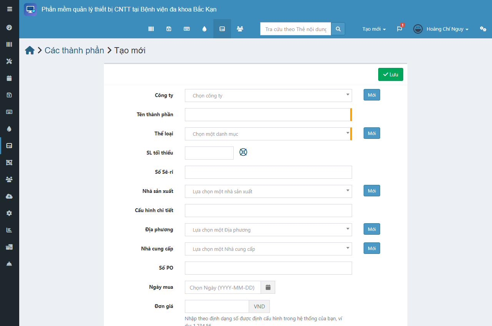
Bước 6.3 Lắp ráp / Gán linh kiện vào một máy tính cụ thể
- Tại dòng linh kiện RAM, bấm nút Cấp phát (Check-out).
- Ở ô Tài sản (Asset): Gõ chọn máy tính được nhận thanh RAM này (Ví dụ: máy Laptop Dell Latitude 5420 - TS-CNTT-002).
- Nhập số lượng gắn:
1rồi bấm Cấp phát. - Khi mở hồ sơ của chiếc laptop Dell đó, bạn sẽ thấy ngay thông tin bên trong máy đang có thanh RAM này!
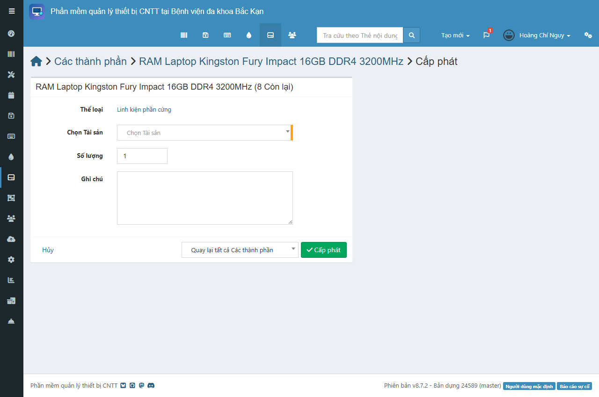
PHẦN 7: GÓI THIẾT BỊ MẪU / COMBO NHÂN VIÊN MỚI (PREDEFINED KITS)
Bước 7.1 Xem danh sách gói thiết bị mẫu
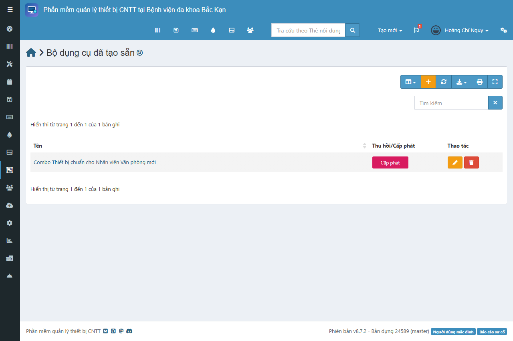
Bước 7.2 Cấp phát 1 chạm cả gói combo cho nhân viên mới
- Bấm nút Cấp phát (Check-out) cạnh gói combo thiết bị mẫu.
- Gõ chọn tên nhân sự mới vào nhận việc.
- Bấm Xác nhận cấp phát. Hệ thống sẽ tự động gán đồng thời Laptop, Chuột và Bản quyền cho nhân viên đó chỉ trong 1 thao tác duy nhất!
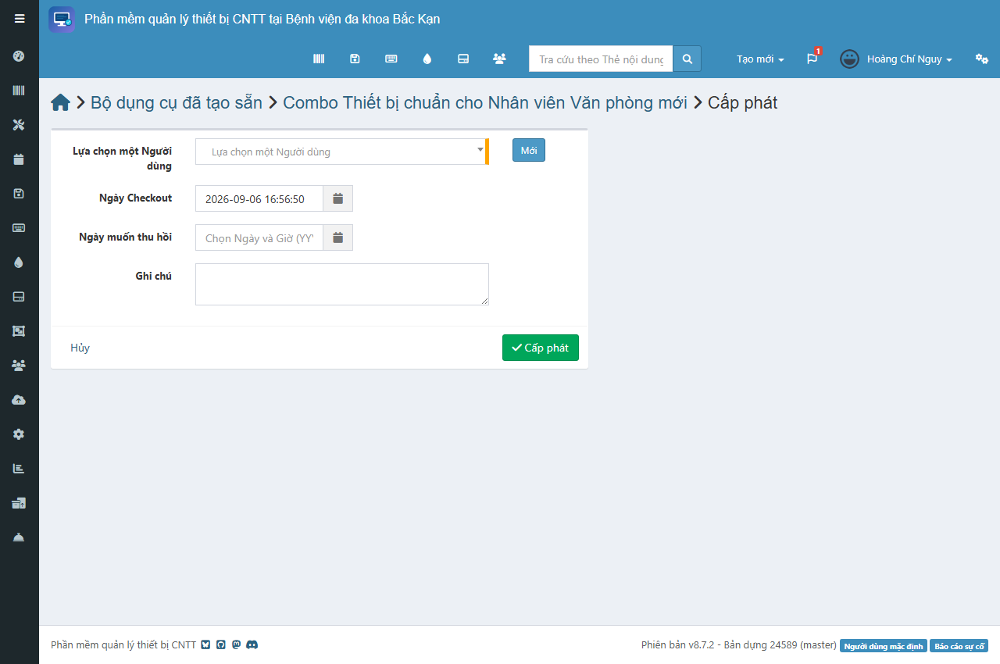
PHẦN 8: THEO DÕI BẢO TRÌ & SỬA CHỮA (MAINTENANCES)
Bước 8.1 Xem sổ theo dõi sửa chữa và bảo hành
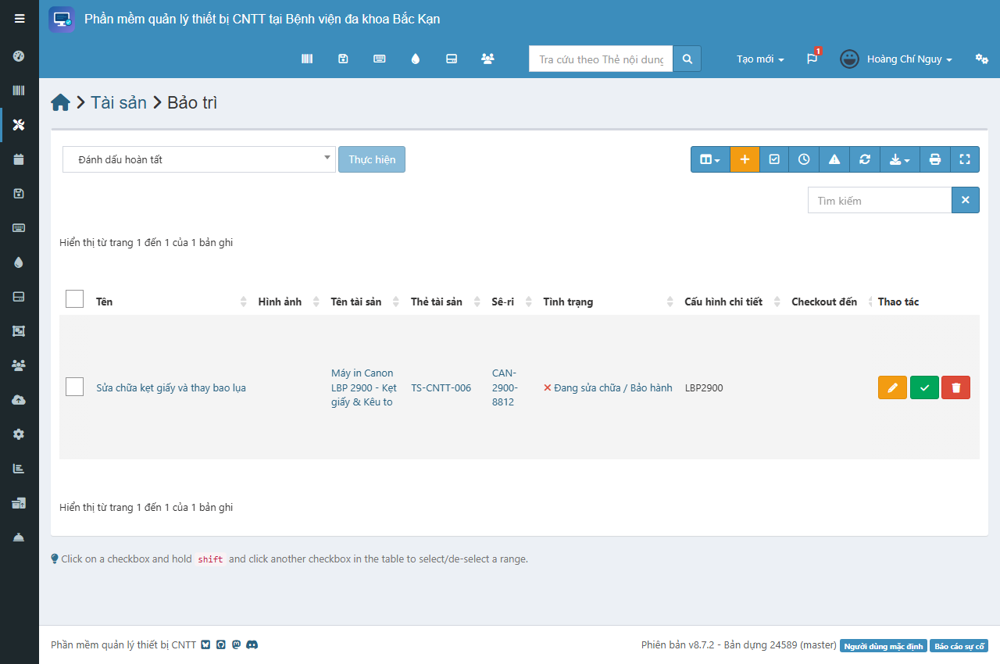
Bước 8.2 Lập phiếu báo hỏng / gửi bảo trì thiết bị
- Bấm nút Tạo mới phiếu bảo trì.
- Chọn thiết bị bị hỏng (Ví dụ: Máy in Canon LBP 2900).
- Chọn loại hình (Sửa chữa, Bảo dưỡng, Bảo hành) và đơn vị sửa chữa (Ví dụ: Công ty Tin học Phong Vũ).
- Mô tả sự cố (Ví dụ: Kẹt giấy, rách bao lụa do dị vật ghim kẹp rơi vào) và nhập chi phí dự kiến.
- Bấm Lưu lại. Trạng thái máy sẽ tự chuyển sang "Đang sửa chữa" để tránh bị xuất kho nhầm.
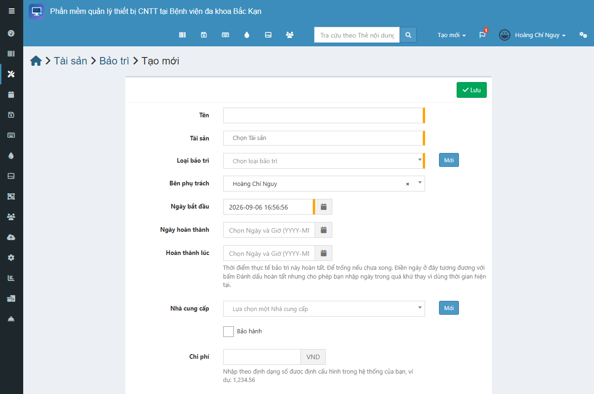
PHẦN 9: QUẢN LÝ NHÂN VIÊN / NGƯỜI DÙNG (USERS)
Bước 9.1 Tra cứu danh sách nhân viên
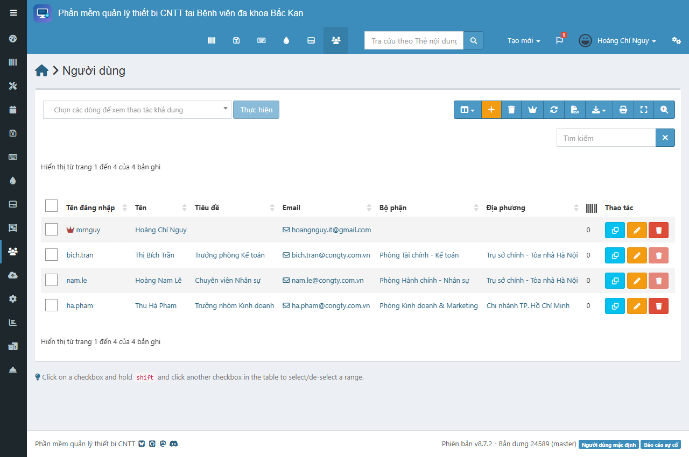
Bước 9.2 Tạo hồ sơ nhân viên mới
- Bấm nút Tạo mới trong trang Người dùng.
- Điền: Họ & Tên (Ví dụ: Trần Thị Bích), Tên đăng nhập (Ví dụ:
bich.tran), Email, Phòng ban và Chức danh. - Nhấn nút Lưu lại.
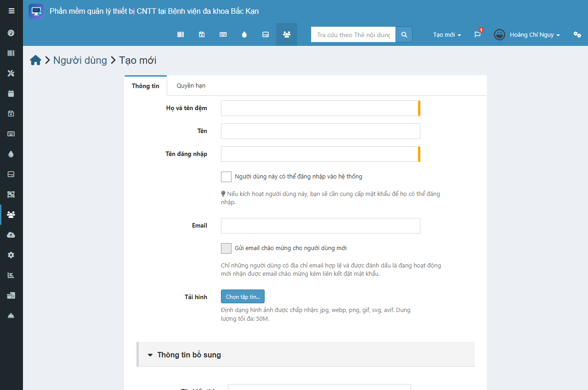
Bước 9.3 Đối soát tài sản khi nhân viên nghỉ việc (CỰC KỲ QUAN TRỌNG)
- Bấm vào tên nhân viên cần đối soát (Ví dụ: Trần Thị Bích).
- Hệ thống liệt kê đầy đủ từng mục:
- Tài sản đang giữ: 1 Laptop Dell Latitude và 1 Màn hình Dell UltraSharp.
- Bản quyền đang dùng: 1 Suất Microsoft 365.
- Phụ kiện đang cầm: 1 Chuột không dây Logitech.
- Chỉ cần nhấp nút Thu hồi (Check-in) ở từng dòng là xong!
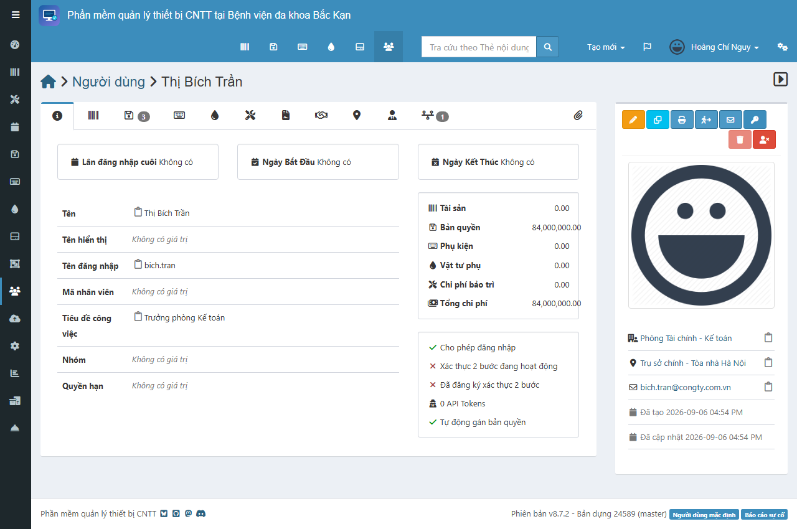
PHẦN 10: THIẾT LẬP DANH MỤC NỀN TẢNG (CATEGORIES, LOCATIONS, STATUS)
Bước 10.1 Quản lý Loại tài sản (Categories)
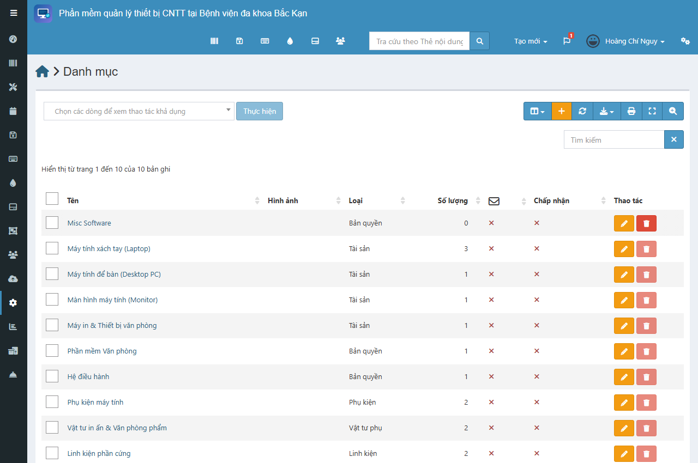
Bước 10.2 Quản lý Vị trí / Chi nhánh (Locations) & Phòng ban
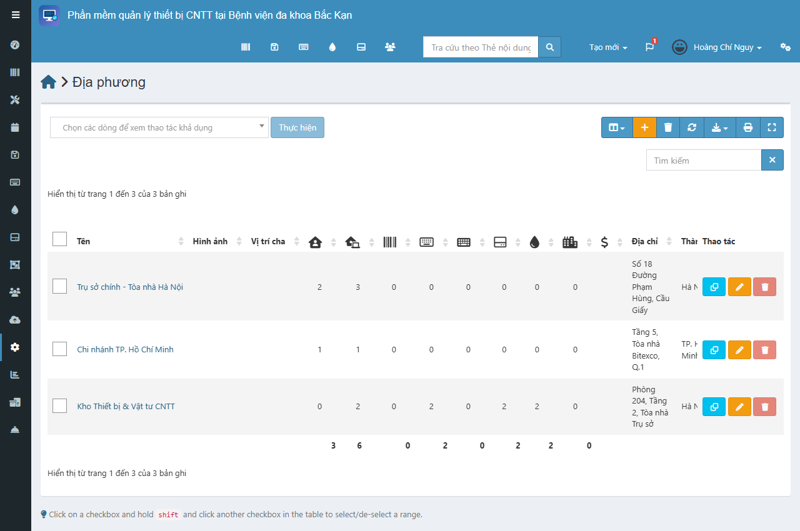
PHẦN 11: BÁO CÁO, KHẤU HAO & NHẬT KÝ HOẠT ĐỘNG (REPORTS)
Bước 11.1 Báo cáo khấu hao giá trị tài sản
- Vào mục Báo cáo -> chọn Báo cáo khấu hao.
- Bảng tính tự động hiện: Giá mua ban đầu, Khấu hao lũy kế và Giá trị còn lại.
- Có thể bấm nút Xuất dữ liệu (Export) ra file Excel để phục vụ quyết toán tài chính.
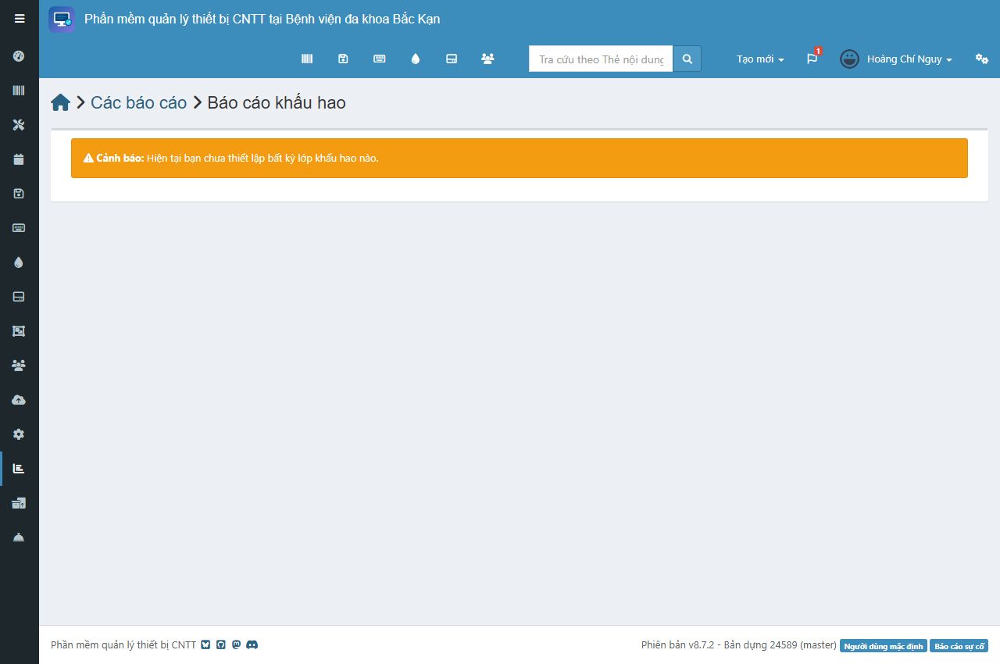
Bước 11.2 Xem Nhật ký hoạt động toàn hệ thống (Audit Log)
- Vào mục Báo cáo -> chọn Nhật ký hoạt động (Activity Log).
- Màn hình lưu lại chi tiết từng giây phút thao tác của mọi quản trị viên.
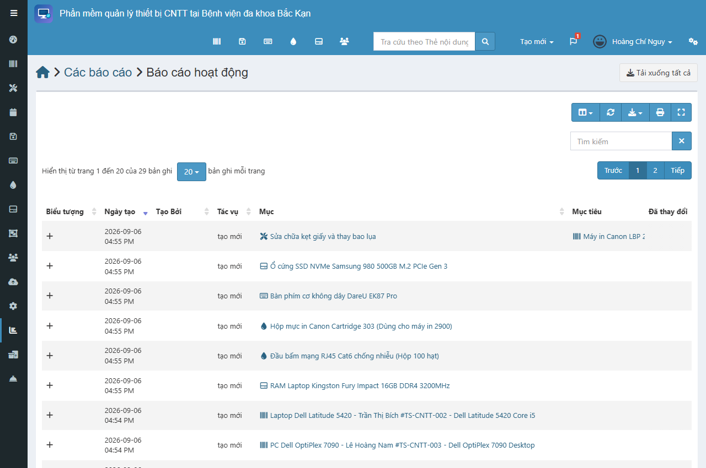
📌 QUY TẮC 3 KHÔNG - 3 PHẢI CHO NGƯỜI QUẢN LÝ TÀI SẢN
- PHẢI dán tem mã tài sản (Asset Tag) ngay khi bóc hộp thiết bị mới mua về.
- PHẢI bấm "Cấp phát (Check-out)" trên phần mềm TRƯỚC KHI trao máy vào tay nhân viên.
- PHẢI bấm "Thu hồi (Check-in)" trên phần mềm NGAY KHI nhận lại máy từ nhân viên nghỉ việc.
- KHÔNG cho mượn máy truyền tay nhau giữa các nhân viên mà không báo cho quản lý cập nhật hệ thống.
- KHÔNG tự ý vứt bỏ máy hỏng mà chưa đổi trạng thái sang "Đã thanh lý".
- KHÔNG để tồn kho vật tư tiêu hao xuống dưới mức tối thiểu rồi mới làm đề xuất mua sắm.